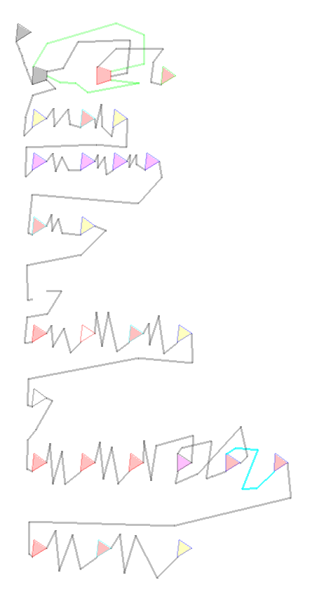

|
For each problem input you should write programs in the polygon programming
language that read
the input through the SIO register, evaluate it, and write suitable output
through SIO. Each problem input is a different programming task. You
should upload a polygon program for each. The problem input tasks are
semi-independent: in case you can write a generic solution that solves
more than one task, you may submit the same program to multiple inputs.
The evaluation server will run your program multiple times with different example input streams and determine the raw score as a sum of the following:
Note: in the input and output format description, an EOF at the end of the stream is always assumed; this EOF is not a real character and thus does not count when calculating the length of the stream. Submissions are evaluated on the reference implementation of the polyprog environment; to avoid contributing to global warming by excess simulation of infinite loops programs are stopped after executing 200000 polygons, without writing an EOF. Such greedy porgrams are obviously not accepted as they fail to terminate their output stream with an EOF. It is strongly recommended to solve all inputs of the previous task before solving this one! |

Reference program four (4.pp) from the previous task |
| Task summary | ||
|---|---|---|
| problem id | serial input syntax | short description |
| 1 | list of uint8 and + | calculate sum, no overflow |
| 2 | list of uint8 and + and - | calculate sum, no overflow |
| 3 | list of uint8 and +, -, * and / | evaluate the expression, no precedence |
| 4 | decimal number in ASCII text | decimal to binary converter |
| 5 | uint16 binary number | binary to decimal converter |
| 6 | plain text input: numbers and operators (+, -, *, /) | evaluate the expression (as in 3), no precedence |
| 7 | same as problem 6, plus the ^ operator for generic power | |
| 8 | same as problem 7, plus the _ operator for generic root | |
| 9 | list of uint64 in binary and + operator | same as problem 1 |
| 10 | list of uint64 in binary and + and - operators | same as problem 1 |
| Detailed specification | ||
|---|---|---|
| description | input | output |
|
Problem 1:
Input stream is a list of number-operator pairs. Numbers are
1 byte long unsigned integers, the operator is always a plus
sign ('+'). The program shall evaluate the expression on the input
and calculate the result and print it on the output as an unsigned 16
bit integer. When printing the output, the most significant byte shall
be printed first. The last operator is omitted, the input ends with a
number.
A valid input stream contains an odd number of bytes, every second byte is a '+' operator. If the operator byte is '-', '*' or '/' then the behaviour is undefined (won't be tested), otherwise if the input is not valid, the program shall print the text "ERROR" and a newline (in 6 bytes) and exit. The ERROR message in hex is: 45 52 52 4F 52 0A <EOF>. Problem inputs are designed to yield a sum less than 65536, therefore this example program doesn't need to deal with overflows. | (hex)
02 2B 07 | (hex)
00 09 |
| description | input | output |
|---|---|---|
| Problem 2: Same as problem 1, except the operator may be a plus or a minus sign ('-'); minus means subtraction. Assuming operations are performed in order of apperance, the problem inputs will guarantee that the result of the expression up to any operator will be between -32768 and +32767. Output must be written in two's complement format. | (hex)
02 2B 07 2D 03 | (hex)
00 06 |
| Problem 3: Same as problem 2, except the operator may be a plus, minus, multiply ('*') and divide ('/'). There is no operator precedence in this task, operations are executed in order they appear, so 2+3*4 is not evaluated as 2+(3*4) but as (2+3)*4. Division by zero shall result in the ERROR message. Divisions are integer divisions. The dividend is never negative. The problem inputs do not contain calculations with any intermediate result out of the -32768 and +32767 range (the program doesn't have to care about overflow conditions). | (hex)
02 2B 07 2D 03 2A 04 2F 03 | (hex)
00 08 |
|
Problem 4:
Input stream is a number written as ASCII text in decimal format. The
program shall read the input, convert it to an unsigned 8 bit integer
and print it in binary format to the serial output.
If the input contains anything else than digits, the program shall quit without printing any character. Input is always between 0 and 255, range check is not required. Leading zeros shall be accepted. | (hex)
31 32 33 | (hex)
7B |
| Problem 5: Input stream is a list of 16 bit unsigned integers, most significant byte first, thus consisting of an even number of bytes altogether. After the second byte of an item is received it should immediately print an ASCII decimal representation of that number (with leading zeros filled up to a width of 5 characters) and a newline. If the input terminates after odd number of bytes, the program shall print the ERROR message. | (hex)
10 70 | (hex)
30 32 36 33 30 |
|
Problem 6:
Same as problem 3, but input is ASCII text: each line is a decimal
number or an operator. Lines are terminated with a single newline
character (ASCII 10, "\n"). The first and the last line of the
stream must be numbers. Numbers are unsigned integers between
0 and 32767 and may contain leading zeros. The output format is
the same as in problem 5. The program is not required to do anything
special for overflows.
If a number-line of the input contains anything other character than digits, the operator-line is not a '+', '-', '/', '*', '^' or '_' or an input line is empty, the program shall print the ERROR message. If the operator is '^' or '_' the behaviour is undefined (won't be tested). | (text)
12 + 55 / 2 * 3 | (text)
00099 |
| description | input | output |
|---|---|---|
Problem 7:
Same as problem 6, with an extra operator "^", which means power:
^b means the result of the previous part to the power of b.
The problem inputs will not use the power feature to generate
numbers larger than 32767. Corner cases:
| (text)
02 * 3 ^ 4 | (text)
01296 |
Problem 8:
Same as problem 7, with a generic root operator '_':
_b means the result of the previous part to the root of b.
For example 8_3 is 2. Since this is only a demonstration program, the managers
are tolerant with the precision of the root operator: the result is accepted
if it's +-2 of the root calculated with infinite precision truncated to
integer; the inifinite precision is meant for the root operation only,
not for any previous calculations.
For example 122_3 is approximately 4.95968 thus the range of acceptance
is (4-2)..(4+2), so anything between 2 and 6 (inclusive) is accepted (exception:
"_1" must be precise).
Corner cases:
| (text)
2 * 3 + 100 * 19 _ 3 | (text)
00012(but 00010, 00011, 00013 and 00014 are also accepted) |
|
Problem 9:
Same as problem 1, but for 64 bit unsigned integers. Both input and
output numbers are 8 byte long, with the least significant byte written
first (unlike in the previous problems!).
The addition shall be done modulo 264. If the operator byte is '-' the behaviour is undefined (won't be tested), otherwise if the operator is not '+' or the end of the input stream is reached unexpectedly, print the ERROR message. | (hex)
86 47 F0 75 12 60 3F 13 2B 7D 0D E5 60 3F 83 C0 2F | (hex)
03 55 D5 D6 51 E3 FF 42 |
| Problem 10: Same as problem 9, with an extra operator '-' for subtraction modulo 264. Input will not contain numbers larger than 263-1. | (hex)
03 00 00 00 00 00 00 00 2B 02 00 00 00 00 00 00 00 2D 09 00 00 00 00 00 00 00 | (hex)
FC FF FF FF FF FF FF FF |